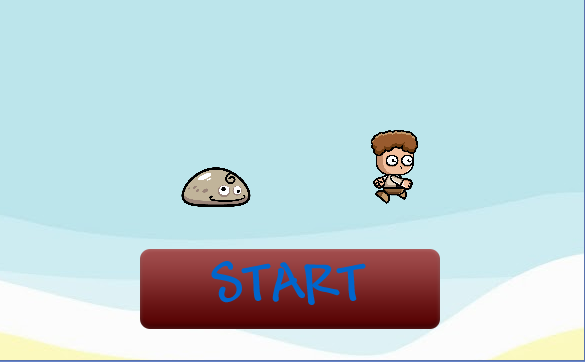
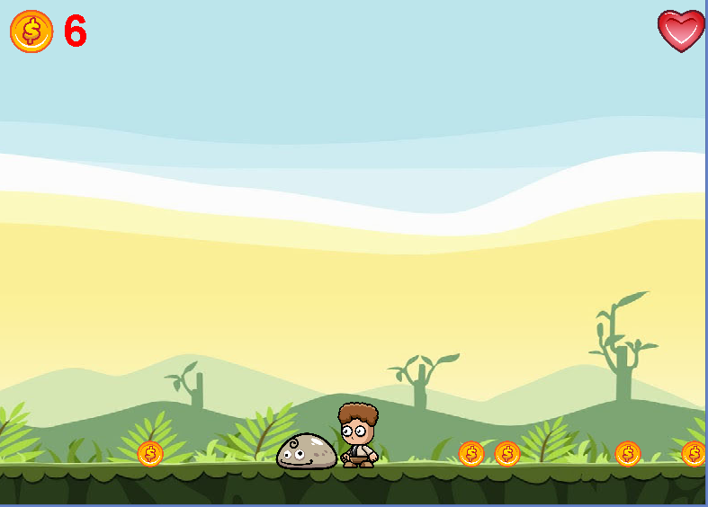
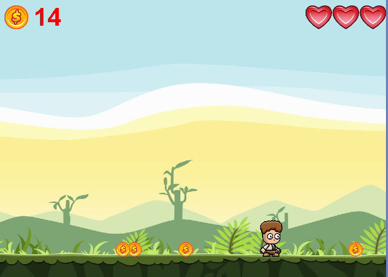

Commander is a 2D sidescrolling adventure desktop application I designed and built on my own. I wrote this game over a period of a few months, finishing in early 2015. It is written in Java and makes use of Java's Swing library. In addition I implemented simple animation into my game, to make it look more appealing. Addiotonally the game also allows users to save highscores locally.
  